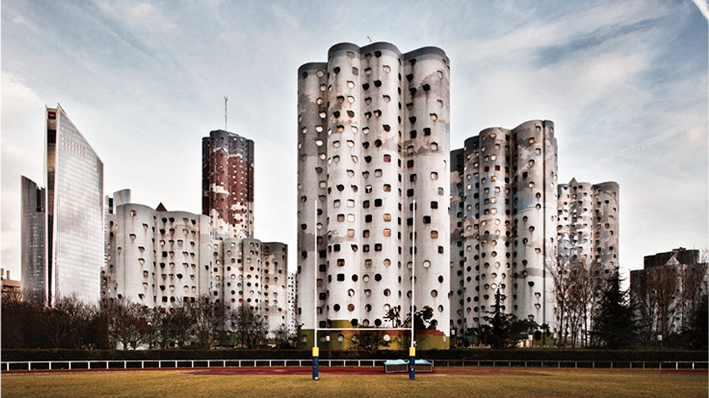

90s01 Les origines
Nanterre,
l'école de la débrouille
Aîné d'une famille modeste de Nanterre, Mohamed enchaîne les petits boulots : vendeur sur un marché, voiturier dans un grand hôtel, bagagiste, livreur. Son patron lui propose de racheter la pizzeria où il travaille : il s'endette, la modernise, rembourse tout en un an… puis, épuisé, passe la main.